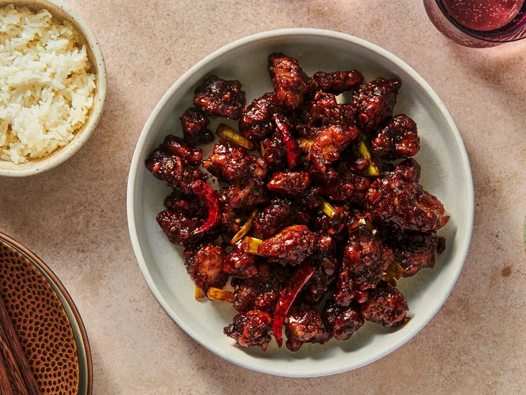

General Tso Chicken

Description
Its origins are still up for debate. Its namesake, General Zuo Zongtang, almost certainly never tasted the dish before his death in 1885 and, as Lee discovers, his descendants—many of whom still reside in the General's hometown of Xiangyin—don't recognize the dish as a family heirloom, or even as particularly Chinese, for that matter.
The late Ed Schoenfeld, proprietor of New York's Red Farm and one of the world's experts on Chinese-American cuisine, traced its origins to Chef Peng Jia, a Hunanese chef who fled to Taiwan after the 1949 revolution. Made with un-battered large chunks of dark meat chicken tossed in a tart sauce, it was more savory than sweet. It wasn't until a New York-based chef, T.T. Wang, learned the recipe from Peng in Taiwan, brought it back, added a crispy deep-fried coating and sugar to the sauce, and changed the name to General Ching's that it stuck, eventually making its way onto Chinese menus across the country and the globe.
Ingredients
For the Marinade:
- 1 large egg white
- 2 tbsp. Chinese dark soy sauce
- 2 tbsp. Shaoxing wine
- 2 tbsp. 80-proof vodka
- 3 tbsp. cornstarch
- 1/4 tsp. baking soda
- 1 lb. boneless, skinless chicken thighs, cut into 1/2- to 3/4-in chunks
For the Dry Coating:
- 1/2 c. all-purpose flour
- 1/2 c. cornstarch
- 1/2 tsp. baking powder
- 1/2 tsp. Kosher salt
To Fry Chicken:
- 1 1/2 qt. peanut, vegetable, or canola oil for deep frying
For the Sauce and to Finish:
- 4 tbsp. sugar
- 3 tbsp. low-sodium chicken stock
- 3 tbsp. dark soy sauce
- 2 tbsp. Shaoxing wine
- 2 tbsp. Chinese rice vinegar or distilled white vinegar
- 1 tbsp. cornstarch
- 2 tsp. peanut, vegetable, or canola oil
- 2 tsp. minced garlic
- 2 tsp. minced fresh ginger
- 2 tsp. minced scallion bottoms, plus 6 to 8 scallions, white parts only, cut into 1-in lengths
- 1 tsp. toasted sesame oil
- 8 small dried red Chinese or Arbol chiles
- 1 cup, loosely packed steamed white rice
Steps
- For the Marinade: Beat egg whites in a large bowl until broken down and lightly foamy. Add soy sauce, wine, and vodka and whisk to combine. Set aside half of marinade in a small bowl. Add cornstarch and baking soda to the large bowl and whisk to combine. Add chicken to large bowl and turn with fingers to coat thoroughly. Cover with plastic wrap and set aside.
- For the Dry Coat: Combine flour, cornstarch, baking powder, and salt in a large bowl. Whisk until homogeneous. Add reserved marinade and whisk until mixture has coarse, mealy clumps. Set aside.
- To Fry Chicken: Heat 1 1/2 quarts peanut, vegetable, or canola oil in a large wok or Dutch oven to 350°F (177°C) and adjust flame to maintain temperature
- Working one piece at a time, transfer chicken from marinade to dry coat mixture, tossing in between each addition to coat chicken. When all chicken is added to dry coat, toss with hands, pressing dry mixture onto chicken so it adheres, and making sure that every piece is coated thoroughly.
- Lift chicken one piece at a time, shake off excess coating, and carefully lower into hot oil (do not drop it). Once all chicken is added, cook, agitating with long chopsticks or a metal spider, and adjusting flame to maintain a temperature of 325 to 375°F (163 to 191°C), until chicken is cooked through and very crispy, about 4 minutes. Transfer chicken to a paper towel-lined bowl to drain. Pour frying oil through a fine-mesh strainer set over a large heatproof bowl; allow to cool, then reserve for future frying.
- For the Sauce and to Finish: Combine sugar, chicken stock, soy sauce, wine, vinegar, cornstarch, and sesame oil in a small bowl and stir with a fork until cornstarch is dissolved and no lumps remain. Set aside.
- Combine oil, garlic, ginger, minced scallions, and red chiles in a wok or large skillet and place over medium heat. Cook, stirring, until vegetables are aromatic and soft, but not browned, about 3 minutes. Stir sauce mixture and add to wok, making sure to scrape out any sugar or starch that has sunk to the bottom of bowl. Cook, stirring, until sauce boils and thickens, about 1 minute. Add scallion segments.
- Add chicken to sauce, then toss, folding it with a wok spatula or silicone spatula until all pieces are thoroughly coated. Serve immediately with white rice.
Source: Serious Eats